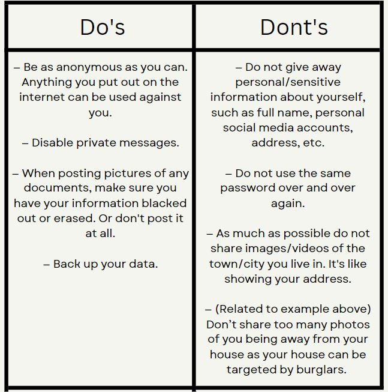

EG 8-9: Streaming Tools:
What types of broadcasting software can we use for our stream? - OBS Software and Melon. What are the initial steps if you want to stream using a Chromebook? - First, we need to ensure we have a good and stable wifi connection. Second, using chrome, go to the Melon website and make an account by signing in. Next, you will have to verify your account before starting the stream. After verifying, you can now begin broadcasting your stream. What are the steps for using OBS Studio for streaming? Go to the OBS studio website and download the app on your laptop or PC(make sure to pick the option that is more compatible with your laptop/PC). Next, once installed, open the program and set up a source that you want to use. When selecting sources, make sure that the "Make source visible" is checked. If you will be choosing a media source, make sure that the audio monitoring is "Monitor and Output on the Audio monitoring. You can delete a source by clicking the source and then select the minus sign (-). The arrows change the priority of the sources. Make sure to put the sources on top if it is the once you currently want to use. To start streaming, go to the control box and select start streaming. When you select it, a pop-up box will appear. Select open settings. Select the stream and connect your account to start streaming.
EG 8 - 9 table:
EG 10: What's your content

Effects of gaming to our society
Why podcast?
.png)
The following are some examples of applications that you can use to listen in a podcast:
Why Podcasts are great?
Unlike Youtube videos or Television shows, podcast users can listen to podcasts without needing to watch the screen, allowing them to listen on walks or when driving home from work.
EG 11: Stream Design
These are the logo and poster

And this is our draft for our stream design
EG 12: Guidelines to keep in mind
The Data Protection Act, 2012 is legislation enacted by the Parliament of the Republic of Ghana to protect the privacy and personal data of individuals.
It (1) protects the privacy of individuals while ensuring free flow of information to promote innovation and growth; (2) regulates the collection, recording, organization, storage, updating or modification, retrieval, consultation, use, consolidation, blocking, erasure or destruction of personal data; and (3) ensures that the Philippines complies with international standards set for data protection through National Privacy Commission (NPC).